sky-stack-feeb04-20261122-1041 · playable /home/user/simula-playable-simula-agent/games/holdout/sky-stack.html · 2026-11-22 10:49 UTC| cut | video | score | gate | H | J | judge |
|---|---|---|---|---|---|---|
| a hook-first |
76 | ✓ | 86.2 dead air 26% · action 0.279 · hook 1.338 moments 1 · arc 1 · 8 shots ✓ core loop · ✓ feature · ✓ end card |
67.7 loop 9 · features 7.5 human 7 · action 6 hook 6.5 · polish 5 · run 5.5 |
The video clearly demonstrates Sky Stack's core timing and slicing mechanics with natural human play. However, a jarring cut from floor 3 back to floor 0 at the start and ending on a 0-floor fail hurt the overall polish. worst @15s: Missing on the very first block (0 floors) right before the end card, which makes the end card read 'Your tower: 0 floors'. | |
| b ★ learn-then-escalate |
80.3 | ✓ | 82.9 dead air 26% · action 0.275 · hook 0.841 moments 1 · arc 1 · 8 shots ✓ core loop · ✓ feature · ✓ end card |
78.1 loop 9 · features 8 human 8.5 · action 7.5 hook 7 · polish 7 · run 7 |
This highlight clearly demonstrates the core stacking loop, overhang slicing, and progression toward the 20-floor goal with natural human timing. However, ending the clip on an immediate zero-floor miss undermines the momentum and makes the final end card look underwhelming. worst @15s: After retrying, the player immediately misses the very first block, causing the end card to display 'Your tower: 0 floors'. | |
| c feature-montage |
80.1 | ✓ | 82.1 dead air 27% · action 0.272 · hook 0.804 moments 1 · arc 1 · 8 shots ✓ core loop · ✓ feature · ✓ end card |
78.4 loop 9 · features 8 human 7.5 · action 7.5 hook 7.5 · polish 7.5 · run 7.5 |
This highlight clearly demonstrates the core stacking loop, overhang slicing, and progression toward the 20-floor goal within a brisk 19-second runtime. However, an immediate miss after the retry leaves the end card awkwardly displaying '0 floors' instead of ending on the stronger first run. worst @15s: Player misses the very first block after retrying, resulting in 'Your tower: 0 floors' on the end card. | |
| base_first baseline: first 20 s |
72.8 | ✓ | 69.9 dead air 30% · action 0.302 · hook 0.952 moments 1 · arc 0.453 · 2 shots ✓ core loop · ✓ feature · ✗ end card |
75.1 loop 9 · features 8 human 8 · action 7 hook 5.5 · polish 7 · run 7 |
The highlight clearly demonstrates Sky Stack's core loop, overhang slicing, and progression toward the 20-floor goal with natural human timing. However, the slow 3-second tutorial start and the abrupt ending on a floor-0 miss dampen the overall punchiness. worst @19s: Ends abruptly right after missing on the very first block of the retry. | |
| base_random baseline: random clips |
60.8 | ✓ | 78.5 dead air 34% · action 0.259 · hook 1.086 moments 0.917 · arc 0.7 · 5 shots ✓ core loop · ✓ feature · ✓ end card |
46.4 loop 6.5 · features 7 human 5.5 · action 5 hook 3.5 · polish 2 · run 2 |
The video is poorly edited with jarring, out-of-order cuts, including jumping straight from the tutorial to a game-over screen and placing the install end card in the middle. While the core stacking mechanic is visible, the chaotic structure and harsh audio make it unusable as an ad. worst @14s: The 'INSTALL' end card appears in the middle of the video before cutting back to gameplay and ending on a 'TRY AGAIN' screen. |
The player understood the core tap-to-drop mechanic and reached 7/20 floors on their first run, but experienced confusion during the unresponsive 'MISSED!' transition and failed at 0 floors on their second attempt. Tightening the fail-state transition, speeding up the opening, and adding early-game forgiveness would make the first-time experience smoother.
| time | type | severity | issue | suggested fix | evidence | signals |
|---|---|---|---|---|---|---|
| 0:13.7–0:21.6 | confusion | high | Unresponsive screen and missing HUD during miss transition After missing a drop at t=13.7s (S6) and t=19.2s (S4, S7), 'MISSED!' appeared while the block fell, and at t=20.3s (S5, S8) the HUD disappeared with no moving block visible. Taps during this window had no visible effect and triggered unclear_screen signals (27-39% confidence). | Transition directly into the 'Tower Toppled' fail overlay as soon as a miss is registered, rather than leaving the player on a HUD-less tower screen where taps do nothing. | 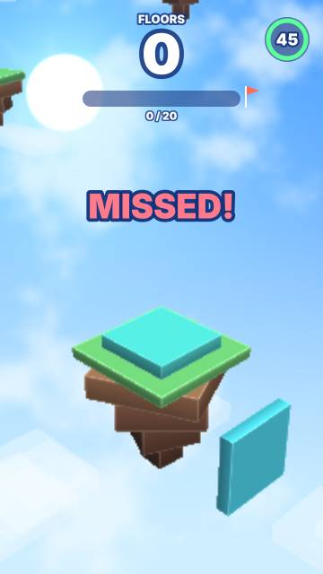 | S4, S5, S6, S7, S8 |
| 0:15.3–0:23.0 | frustration | medium | Instant fail on a single miss, including at 0 floors A single miss ended the first run at 7/20 floors (S9), and a miss on the very first block ended the second run at 0 floors (S10), immediately pushing the player to the end card at t=23.0s (S12). | Add a 1-miss grace/shield on the first few floors (or widen the initial block tolerance) so a single early mistap does not immediately end the run at 0 floors. | 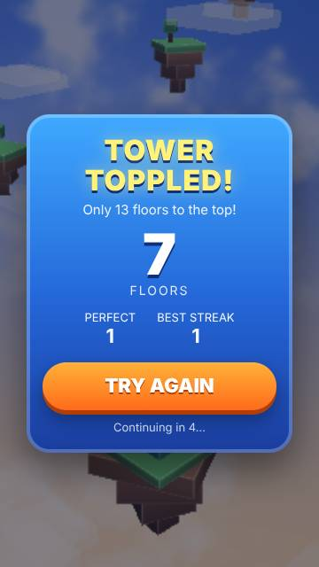 | S9, S10, S12 |
| 0:00.0–0:04.4 | pacing | medium | Slow time to first successful drop It took 4.4s from the first playable frame until the player's first tap visibly stacked a block (S1), with the tutorial prompt still active at t=2.0s. | Have the first block already sliding in on frame 1 with a pulsing tap indicator, and dismiss the tutorial prompt on the first tap so the player scores their first floor within 1-2 seconds. | 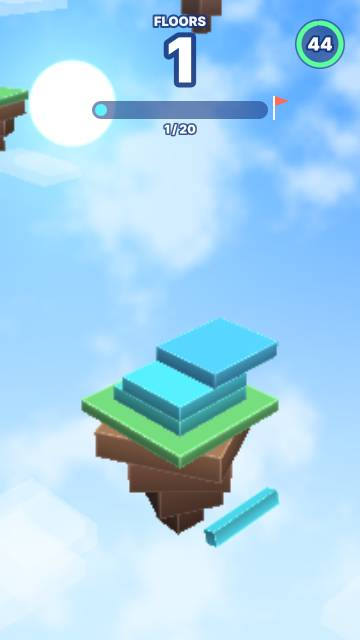 | S1 |
| 0:17.4 | ui | low | No sliding block visible immediately after restart Right after restarting at t=17.4s (S3), the screen showed 0/20 floors and 45s on the timer, but no sliding block was visible yet, causing an unclear_screen signal (36% confidence). | Spawn the first sliding block already visible at the edge of the play area immediately upon tapping 'TRY AGAIN' so the player sees the round is active. | 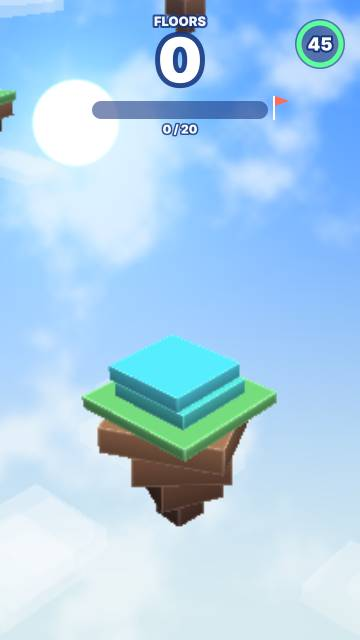 | S3 |
| time | saw | phase | planner | actions (with human reaction time) | notes | cost |
|---|---|---|---|---|---|---|
| 0:02.0 turn 1 | 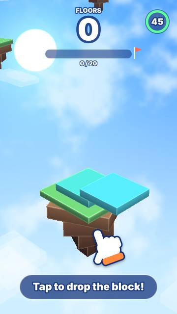 |
tutorial decider: tutorial 96% clarity 99% |
sees: Tutorial screen with a stack of blocks and 'Tap to drop the block!' prompt progress: First turn, starting the game. |
0:03.6 tap Drop the first block (+1643 ms) | Goal: stack 20 floors within 45s. Controls: tap anywhere to drop the moving block. Try to align it with the stack below. | 2.5s $0.0051 |
| 0:04.4 turn 2 | gameplay decider: gameplay 65% clarity 73% last input worked: 99% |
sees: Gameplay, 1/20 floors, 44s left, new block sliding progress: First block dropped, floor count is 1 |
0:05.0 tap Drop the next moving block (+673 ms) slipped | Goal: stack 20 floors within 45s. Controls: tap anywhere to drop the moving block. Try to align it with the stack below. | 3.1s $0.0049 | |
| 0:05.7 turn 3 | 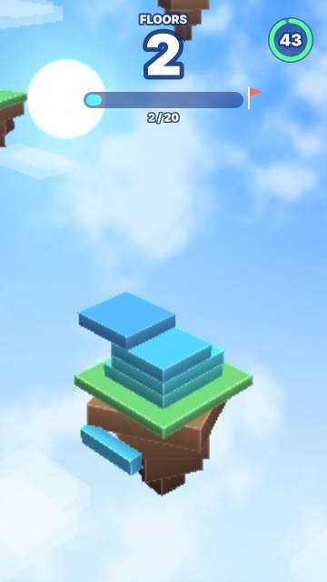 |
gameplay decider: gameplay 97% clarity 56% last input worked: 97% |
sees: Gameplay: 2/20 floors, 43s left, blue block moving near top of stack progress: Dropped previous block, now at 2/20 floors |
0:06.2 tap Drop the moving block onto the stack (+536 ms) | Goal: stack 20 floors within 45s. Controls: tap anywhere to drop the moving block. Try to align it with the stack below. | 3.5s $0.0063 |
| 0:06.9 turn 4 | 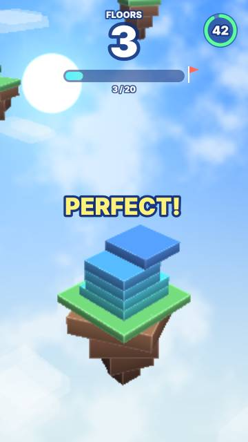 |
gameplay decider: gameplay 90% clarity 55% last input worked: 99% |
sees: Gameplay at 3/20 floors, 42s left, block sliding in progress: Stacked floor 3, got PERFECT! |
0:06.9 wait Wait for the moving block to align with the stack 0:07.6 tap Drop the moving block onto the stack (+416 ms) |
Goal: stack 20 floors within 45s. Controls: tap anywhere to drop the moving block. Try to align it with the stack below. | 3.1s $0.0060 |
| 0:08.4 turn 5 | 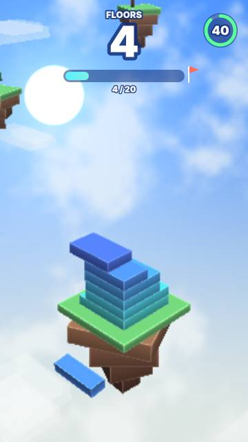 |
gameplay decider: gameplay 94% clarity 50% last input worked: 79% |
sees: Stack gameplay, 4/20 floors, 40s left progress: Dropped 4th block, a bit off-center so stack got narrower. |
0:08.4 wait Wait for the next moving block to slide into position 0:08.9 tap Drop the moving block onto the stack (+183 ms) |
Goal: stack 20 floors within 45s. Controls: tap anywhere to drop the moving block. Try to align it with the stack below. | 3.1s $0.0056 |
| 0:09.7 turn 6 | 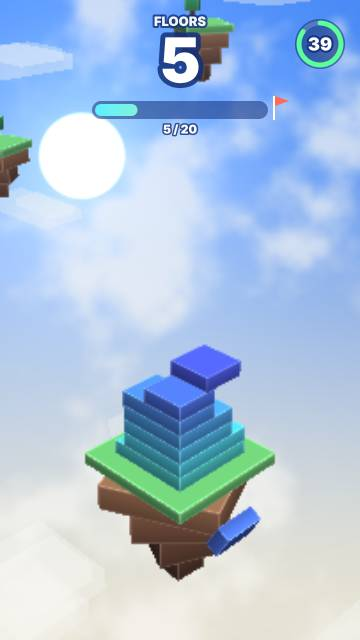 |
gameplay decider: gameplay 98% clarity 52% last input worked: 96% |
sees: Gameplay: 5/20 floors, 39s left, moving block near top of stack progress: Stacked up to 5 floors. |
0:10.2 tap Drop the moving block onto the stack (+496 ms) 0:10.3 wait Wait for the next moving block to slide into position 0:11.3 tap Drop the next moving block (+370 ms) |
Goal: stack 20 floors within 45s. Controls: tap anywhere to drop the moving block. Try to align it with the stack below. | 3.2s $0.0061 |
| 0:12.2 turn 7 | 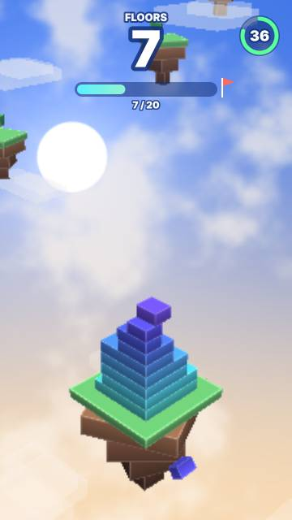 |
gameplay decider: gameplay 98% clarity 45% last input worked: 99% |
sees: Stack gameplay at 7/20 floors, 36s remaining progress: Dropped block 7, stack is getting narrower |
0:12.2 wait Wait for the next moving block to slide into position 0:13.1 tap Drop the moving block onto the stack (+373 ms) |
Goal: stack 20 floors within 45s. Controls: tap anywhere to drop the moving block. Stack is at 7/20. | 3.3s $0.0060 |
| 0:13.7 turn 8 | 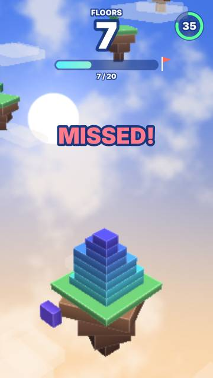 |
gameplay decider: gameplay 86% clarity 59% last input worked: 19% |
sees: MISSED! text on screen, stack at 7/20, timer 35s progress: Last drop missed the stack |
0:13.7 wait Wait to see if a new block spawns or if it's game over | Goal: stack 20 floors within 45s. Controls: tap anywhere to drop the moving block. Stack is at 7/20, just missed a block. | 2.9s $0.0051 |
| 0:15.3 turn 9 | 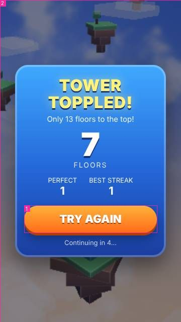 |
fail decider: fail 96% clarity 97% last input worked: 92% |
sees: Tower Toppled fail screen with 7 floors, 1 perfect, 1 best streak, and TRY AGAIN button progress: Tower toppled after missing the block |
0:16.2 tap “TRY AGAIN” Tap TRY AGAIN to restart the game (+946 ms) | Goal: stack 20 floors within 45s. Controls: tap anywhere to drop the moving block. Failed at 7 floors, tapping Try Again. | 2.0s $0.0047 |
| 0:17.4 turn 10 | gameplay decider: gameplay 85% clarity 36% last input worked: 100% |
sees: Fresh game started, 0/20 floors, 45s timer, first block sliding in from left progress: Restarted successfully |
0:17.4 wait Wait for the moving block to slide over the stack 0:18.6 tap Drop the moving block onto the stack (+384 ms) |
Goal: stack 20 floors within 45s. Controls: tap anywhere to drop the moving block. Fresh run started. | 3.0s $0.0054 | |
| 0:19.2 turn 11 | gameplay decider: gameplay 65% clarity 39% last input worked: 3% |
sees: MISSED! text shown, piece falling off the stack progress: Dropped block but missed slightly |
0:19.2 wait Wait for the next moving block to appear and slide | Goal: stack 20 floors within 45s. Controls: tap anywhere to drop the moving block. Missed the first block, waiting for next block. | 2.1s $0.0050 | |
| 0:20.3 turn 12 | 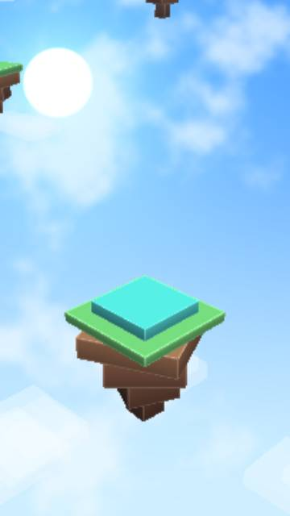 |
gameplay decider: gameplay 83% clarity 27% last input worked: 31% |
sees: Cyan block stacked on green platform, no moving block visible yet progress: Successfully stacked the cyan block onto the green platform |
0:20.3 wait Wait for the next moving block to slide into view | Goal: stack 20 floors within 45s. Controls: tap anywhere to drop the moving block. Successfully stacked 1 block. | 2.2s $0.0050 |
| 0:21.6 turn 13 | 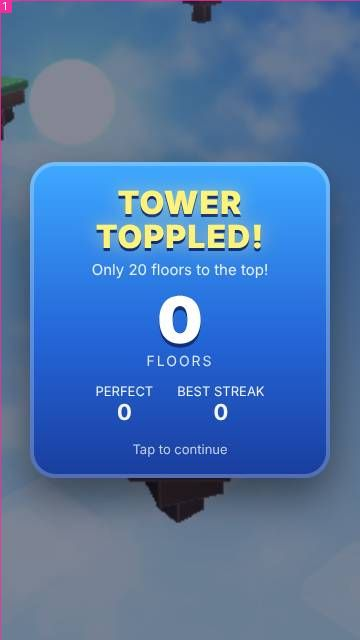 |
fail decider: fail 88% clarity 95% last input worked: 3% |
sees: TOWER TOPPLED! 0 FLOORS, Tap to continue progress: Tower toppled on the first block |
0:22.9 tap “TOWER TOPPLED! Only 20 floors to the top” Tap to continue (+1223 ms) | Goal: stack 20 floors within 45s. Controls: tap anywhere to drop the moving block. Missed the first block after restarting. | 3.6s $0.0044 |
| 0:24.0 turn 14 | 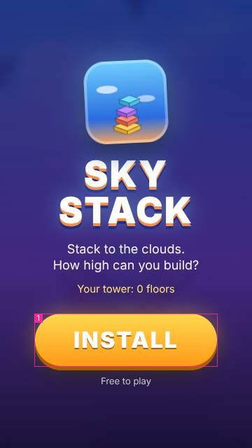 |
end_card decider: end_card 85% clarity 78% last input worked: 36% |
sees: End card for SKY STACK with INSTALL button progress: Reached the end card |
0:27.0 tap “INSTALL” Tap INSTALL on the end card (+517 ms) | Game ended and showed the end card. | 2.1s $0.0042 |
Files: raw.mp4 · highlight.mp4 · candidates/ · moments.json · game_model.json · edl_*.json · eval.json · friction.json/.md · plans.jsonl · actions.jsonl · observations.jsonl · decisions in plans.jsonl · ledger.jsonl · trace.jsonl · obs/